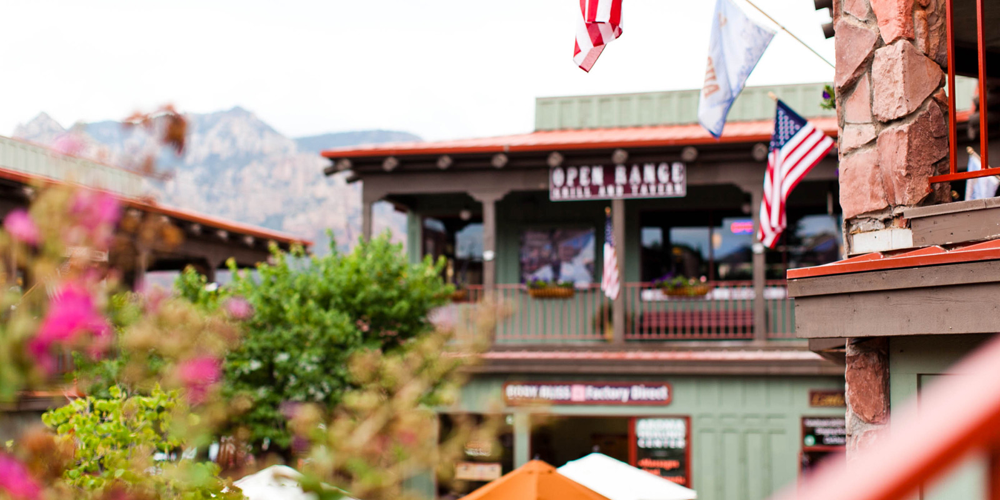

Седона — небольшой городок в аризоне, заслуживающий большего!
Рассмотрим 5 причин, по которым Седона круче, чем Гранд Коньон!
Настоящий
городок
- №1 -Седона не атракцион для туристов,
там течет своя жизнь

Жилье
Рекомендуем пожить в настоящем
мотеле, все как в кино!
Еда
Всегда заказывайте фирменный бургер, вы не разачаруетесь!
Сувениры
Не только китайского но и местного
производства!
Там есть
мост дьявола
- №2 -Да, по нему можно пройти! Если конечно вы осмелитесь
Небольшая
площадь
- №3 -Все достопримечательности
находятся очень близко
Красивая
дорога
- №4 -Ехать в Седону из Лас-Вегаса совсем
не скучно!
Мало
туристов
- №5 -Большинство едет в гранд каньон и
толпится там
Заинтересовались?
Укажите предполагаемые даты поездки, и мы покажем вам лучшие предложения гостиниц в седоне